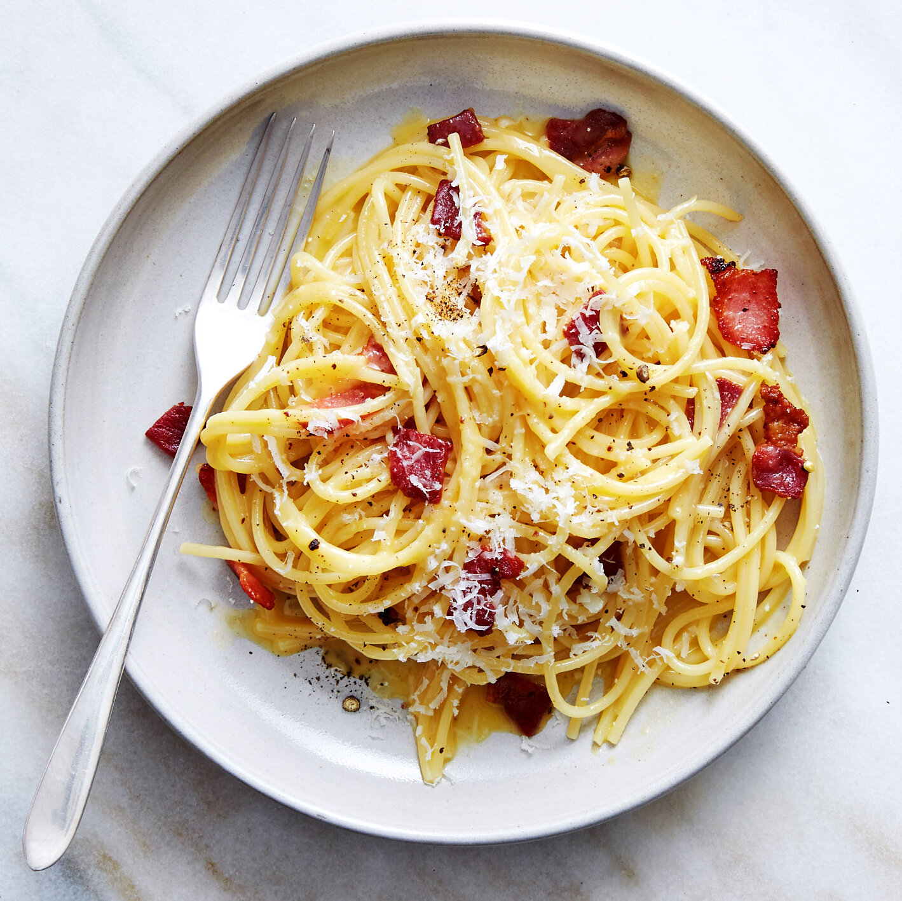

Carbonara

Description
Carbonara is a dish of deceptive simplicity and profound flavor, a testament to the elegant ingenuity of Roman cuisine. It is not, as is often misunderstood, a cream-based pasta, but a luxurious, silken sauce born from the alchemy of a few perfect ingredients.
The heart of Carbonara lies in a harmonious trinity: guanciale, a cured pork cheek with a rich, melt-in-your-mouth texture and a peppery flavor; freshly cracked black pepper; and the star—a paste of egg yolks and aged Pecorino Romano cheese.
The magic unfolds as the pasta, typically long strands of spaghetti or bucatini, is cooked to a perfect al dente. The hot, drained pasta is then tossed immediately with the pre-cooked guanciale and a generous amount of black pepper. The residual heat of the pasta is the sole engine of the transformation. It gently cooks the egg and cheese mixture into a velvety, glossy emulsion that clings to every strand. The result is a sauce that is rich yet light, savory yet delicate, a perfect balance of salty, peppery, and umami notes.
Ingredients
- Pasta: Long, dry pasta such as spaghetti or bucatini.
- Guanciale: Cured pork cheek, diced into small cubes. This is the traditional and crucial ingredient that provides a unique richness and flavor.
- Eggs: The yolks of fresh, free-range eggs. The yolks are the key to the sauce's silky texture.
- Pecorino Romano Cheese: Aged hard cheese made from sheep's milk, finely grated. Its sharp, salty flavor is integral to the dish.
- Black Pepper: Generously and freshly cracked, both for its aromatic warmth and a touch of subtle heat.
Instructions
Preparation
- Prep the Guanciale: Cut the guanciale into small cubes or thick matchsticks.
- Make the Egg-Cheese Mixture: In a bowl large enough to hold the pasta, whisk together the egg yolks, grated Pecorino Romano cheese, and a generous amount of freshly cracked black pepper. The mixture should form a thick, creamy paste.
Cooking
- Cook the Guanciale: Place the guanciale in a dry skillet (no oil needed, as it will render its own fat). Cook over medium-low heat until the fat has rendered and the guanciale is crispy. Remove the crispy bits with a slotted spoon and set them aside. Leave the rendered fat in the pan.
- Cook the Pasta: Bring a large pot of water to a boil. Salt the water well and add the pasta. Cook according to package directions until it is perfectly al dente.
- Combine and Emulsify: Drain the pasta, but do not rinse it. Immediately add the hot, drained pasta to the skillet with the rendered guanciale fat. Toss vigorously for about 30 seconds to coat the pasta.
- Create the Sauce: Remove the skillet from the heat. Pour the egg-cheese mixture over the pasta. Toss quickly and continuously. The residual heat from the pasta will gently cook the egg and cheese, creating a rich, glossy, and creamy sauce that clings to every strand. If the sauce seems too thick, add a small splash of the reserved pasta cooking water, a tablespoon at a time, to achieve the desired consistency.
Finishing
- Plate and Garnish: Transfer the Carbonara to warm bowls. Garnish with the reserved crispy guanciale and another generous dusting of Pecorino Romano cheese and freshly cracked black pepper. Serve immediately.
Home